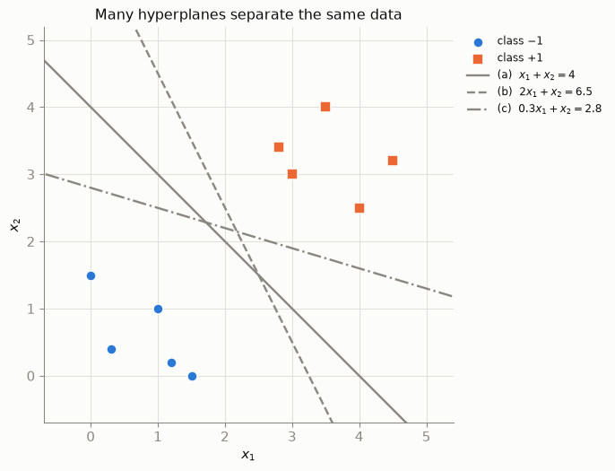
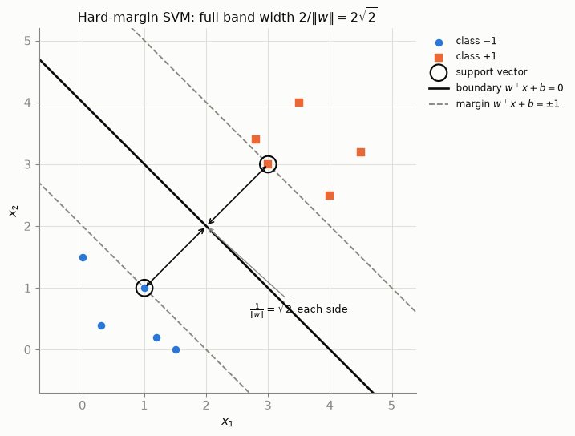
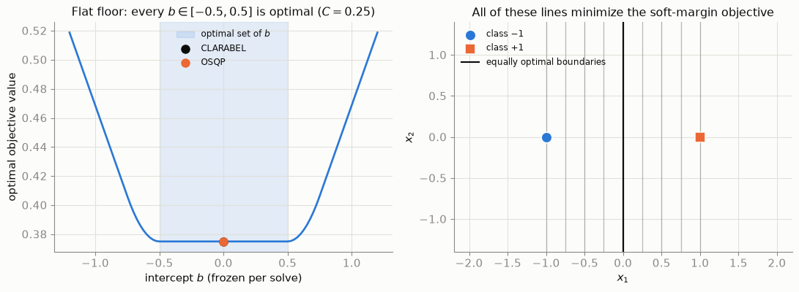

Maximum-Margin Classification from First Principles: SVMs as Convex Optimization
Why the widest street wins: geometry, quadratic programming, support vectors, and the soft-margin trade-off — every number below is solved, not asserted.
Machine Learning
Optimization
Mathematics
Author
Ravi Kalia
Published
July 23, 2026
Maximum-Margin Classification from First Principles
A support vector machine (SVM) selects a separating hyperplane by solving a convex optimization problem that maximizes geometric margin. Soft-margin SVMs add slack penalties for non-separable data.
All numeric results below come from CVXPY solves on two synthetic 2D datasets. Assertions in the notebook block render if solver output disagrees with hand-derived values. scikit-learn cross-checks appear at the end.
Setup: imports, house palette, plotting helpers, and the toy dataset
import numpy as npimport cvxpy as cpimport matplotlib.pyplot as pltfrom matplotlib.lines import Line2Dfrom IPython.display import Markdown# palette (house style)BLUE, ORANGE, INK ="#2a78d6", "#eb6834", "#0b0b0b"MUTED, GRID, SURFACE ="#898781", "#e1e0d9", "#fcfcfb"plt.rcParams.update({"figure.facecolor": SURFACE, "axes.facecolor": SURFACE,"savefig.facecolor": SURFACE,"axes.edgecolor": MUTED, "axes.labelcolor": INK,"xtick.color": MUTED, "ytick.color": MUTED, "text.color": INK,"axes.grid": True, "grid.color": GRID, "grid.linewidth": 0.8,"axes.spines.top": False, "axes.spines.right": False,"font.size": 11, "axes.titlesize": 12,})RNG_SEED =42# fixed seed for every random draw in this postTOL =1e-6# numerical tolerance used for all constraint checksdef md_table(headers, rows):"""Render a small Markdown table without extra dependencies.""" head ="| "+" | ".join(headers) +" |" sep ="|"+"|".join(["---"] *len(headers)) +"|" body = ["| "+" | ".join(str(c) for c in r) +" |"for r in rows]return Markdown("\n".join([head, sep, *body]))def scatter_classes(ax, X, y, s=70, sv_mask=None):"""Class -1 as blue circles, class +1 as orange squares (shape backs up color).""" neg, pos = y <0, y >0 ax.scatter(*X[neg].T, s=s, c=BLUE, marker="o", zorder=3, edgecolor=SURFACE, linewidth=1.2, label="class $-1$") ax.scatter(*X[pos].T, s=s, c=ORANGE, marker="s", zorder=3, edgecolor=SURFACE, linewidth=1.2, label="class $+1$")if sv_mask isnotNoneand sv_mask.any(): ax.scatter(*X[sv_mask].T, s=s *3.4, facecolor="none", edgecolor=INK, linewidth=1.6, zorder=4, label="support vector")def draw_hyperplane(ax, w, b, level=0.0, x1lim=(-1, 6), **kw):"""Draw the line w@x + b = level over the given x1 range.""" w = np.asarray(w, dtype=float) x1 = np.array(x1lim, dtype=float)ifabs(w[1]) >1e-12: ax.plot(x1, (level - b - w[0] * x1) / w[1], **kw)else: # vertical line x1 = (level - b) / w1 ax.axvline((level - b) / w[0], **kw)def draw_svm(ax, w, b, x1lim=(-1, 6)):"""Decision boundary plus the two margin lines w@x + b = ±1.""" draw_hyperplane(ax, w, b, 0.0, x1lim, color=INK, lw=2.0, label=r"boundary $w^\top x + b = 0$")for lv in (-1.0, 1.0): draw_hyperplane(ax, w, b, lv, x1lim, color=MUTED, lw=1.4, ls="--", label=r"margin $w^\top x + b = \pm 1$"if lv >0elseNone)# ---- Dataset A: linearly separable, chosen for clean numbers -----------------X_A = np.array([ [1.0, 1.0], [0.0, 1.5], [1.5, 0.0], [0.3, 0.4], [1.2, 0.2], # class -1 [3.0, 3.0], [2.8, 3.4], [3.5, 4.0], [4.0, 2.5], [4.5, 3.2], # class +1])y_A = np.array([-1, -1, -1, -1, -1, +1, +1, +1, +1, +1])n_A =len(y_A)
1 Linear classifier
A linear classifier uses
\[
f(x) = w^\top x + b,
\]
with decision boundary \(\{x : w^\top x + b = 0\}\). Predict class \(+1\) if \(f(x)>0\), class \(-1\) if \(f(x)<0\).
2 Separation constraints
Training data \((x_i, y_i)\) with \(y_i\in\{-1,+1\}\) is separated when
\[
y_i \left( w^\top x_i + b \right) > 0, \qquad i = 1, \ldots, n.
\]
Multiplying by \(y_i\) unifies both class cases in one inequality.
3 Dataset A
3.1 Data provenance
Source: Synthetic; ten hand-chosen 2D points, five per class.
Objective: Hard-margin SVM with analytically known solution.
Why synthetic: Closest cross-class pair is \((1,1)\) and \((3,3)\); optimal boundary is their perpendicular bisector \(x_1+x_2=4\), enabling exact checks.
Infinitely many hyperplanes can satisfy separation on separable data. Training accuracy alone does not select among them.
Verify and plot three separating lines
candidates = {"(a) $x_1 + x_2 = 4$": (np.array([1.0, 1.0]), -4.0),"(b) $2x_1 + x_2 = 6.5$": (np.array([2.0, 1.0]), -6.5),"(c) $0.3x_1 + x_2 = 2.8$": (np.array([0.3, 1.0]), -2.8),}for name, (w_c, b_c) in candidates.items(): worst = np.min(y_A * (X_A @ w_c + b_c))assert worst >0, f"candidate {name} does not separate the data"fig, ax = plt.subplots(figsize=(7.5, 5.6))scatter_classes(ax, X_A, y_A)for (name, (w_c, b_c)), ls inzip(candidates.items(), ["-", "--", "-."]): draw_hyperplane(ax, w_c, b_c, 0.0, (-1, 6), color=MUTED, lw=1.8, ls=ls, label=name)ax.set_xlim(-0.7, 5.4); ax.set_ylim(-0.7, 5.2); ax.set_aspect("equal")ax.set_xlabel("$x_1$"); ax.set_ylabel("$x_2$")ax.legend(frameon=False, loc="upper left", bbox_to_anchor=(1.01, 1.0), fontsize=9)ax.set_title("Many hyperplanes separate the same data")plt.tight_layout()plt.show()

Figure 1: Three different lines, each verified to classify all ten training points correctly. Training accuracy alone cannot choose between them — line (c) skims dangerously close to the orange class, yet separates the data just as ‘perfectly’ as the others.
4 Geometric margin
Perpendicular distance from \(x_i\) to \(\{x : w^\top x + b = 0\}\):
\[
\operatorname{dist}(x_i) = \frac{\left| w^\top x_i + b \right|}{\lVert w \rVert}.
\]
Functional margin:\(|f(x_i)|\) — scales with \((w,b)\).
fig, ax = plt.subplots(figsize=(7.5, 5.8))scatter_classes(ax, X_A, y_A, sv_mask=sv_mask_hard)draw_svm(ax, w_hard, b_hard)# perpendicular distance arrows from each support vector to the boundaryu = w_hard / np.linalg.norm(w_hard) # unit normalfor sv, sign inzip(X_A[sv_mask_hard], (-1, +1)): foot = sv - (w_hard @ sv + b_hard) / np.linalg.norm(w_hard) * u ax.annotate("", xy=foot, xytext=sv, arrowprops=dict(arrowstyle="<->", color=INK, lw=1.2))ax.annotate(r"$\frac{1}{\Vert w\Vert}=\sqrt{2}$ each side", xy=(2.0, 2.0), xytext=(2.7, 0.6), fontsize=10, arrowprops=dict(arrowstyle="->", color=MUTED))ax.set_xlim(-0.7, 5.4); ax.set_ylim(-0.7, 5.2); ax.set_aspect("equal")ax.set_xlabel("$x_1$"); ax.set_ylabel("$x_2$")ax.legend(frameon=False, loc="upper left", bbox_to_anchor=(1.01, 1.0), fontsize=9)ax.set_title(r"Hard-margin SVM: full band width $2/\Vert w\Vert = 2\sqrt{2}$")plt.tight_layout()plt.show()

Figure 2: The maximum-margin solution for Dataset A: boundary \(x_1+x_2=4\) (solid), margin lines \(w^\top x + b = \pm 1\) (dashed), support vectors ringed in black. Each support vector sits exactly \(1/\lVert w\rVert = \sqrt{2}\) from the boundary; the full band is \(2\sqrt{2} \approx 2.83\) wide.
8 Convexity of the hard-margin QP
Objective:\(\tfrac12\lVert w\rVert^2\) is strictly convex in \(w\); \(b\) does not appear in the objective.
Constraints: Each \(y_i(w^\top x_i+b)\ge1\) is a linear half-space in \((w,b)\).
Feasible set: Intersection of half-spaces — a convex polyhedron.
Consequences:
Every local minimum is global.
Interior-point solvers (CLARABEL) return certified optima via duality.
No random restarts required.
Limits:
Feasibility: Non-separable data yields empty feasible set (Section 11).
Uniqueness: Convexity does not imply a unique minimizer in all variables (Section 9, Section 12).
Numerical tolerance: Checks use TOL = 1e-6.
Eliminating \(b\), feasible \((w_1,w_2)\) satisfy \(w^\top(x_i-x_j)\ge2\) for all cross-class pairs \((i,j)\).
Figure 3: The QP in parameter space with the intercept eliminated: each cross-class pair of training points imposes the half-plane \(w^\top(x_i - x_j) \ge 2\) on \((w_1, w_2)\); their intersection is the shaded feasible region. The objective’s circular level sets shrink toward the origin, and \(w^\star = (0.5, 0.5)\) is the point of the feasible region closest to the origin — its active edge is generated by the support-vector pair \((3,3)\) and \((1,1)\).
9 Uniqueness
For feasible two-class hard-margin SVMs:
\(w^\star\) is unique (strict convexity in \(w\)).
\(b^\star\) collapses to a point when both classes contribute binding constraints at optimum.
b-interval collapse + independent solvers agree
b_lo = np.max(1- X_A[y_A >0] @ w_hard) # +1 class: b ≥ 1 − w·xb_hi = np.min(-1- X_A[y_A <0] @ w_hard) # −1 class: b ≤ −1 − w·xprint(f"b interval given w*: [{b_lo:.6f}, {b_hi:.6f}] → width "f"{b_hi - b_lo:.2e} (collapses to the point b* = −2)")hard.solve(solver=cp.OSQP)print(f"OSQP : w = ({w.value[0]:.6f}, {w.value[1]:.6f}), b = {b.value:.6f}")print(f"CLARABEL : w = ({w_hard[0]:.6f}, {w_hard[1]:.6f}), b = {b_hard:.6f}")assert np.allclose(w.value, w_hard, atol=1e-3) andabs(b.value - b_hard) <1e-3hard.solve(solver=cp.CLARABEL) # restore the reference solution
b interval given w*: [-2.000000, -2.000000] → width 3.11e-10 (collapses to the point b* = −2)
OSQP : w = (0.500000, 0.500000), b = -2.000000
CLARABEL : w = (0.500000, 0.500000), b = -2.000000
np.float64(0.25000000007783907)
9.1 One-class degeneracy
With only \(+1\) points, \((w,b)=(0,b)\) with \(b\ge1\) is feasible and optimal (\(\tfrac12\lVert w\rVert^2=0\)). \(w^\star=0\) is unique; \(b^\star\) is not; no hyperplane exists.
One-class degenerate solve with two solvers
w1c, b1c = cp.Variable(2), cp.Variable()one_class = cp.Problem(cp.Minimize(0.5* cp.sum_squares(w1c)), [X_A[y_A >0] @ w1c + b1c >=1])for solver in (cp.CLARABEL, cp.SCS): one_class.solve(solver=solver)print(f"{solver:<9}: status={one_class.status}, ||w|| = "f"{np.linalg.norm(w1c.value):.2e}, b = {b1c.value:.4f}")assert np.linalg.norm(w1c.value) <1e-3# w* = 0 in both cases
CLARABEL : status=optimal, ||w|| = 5.25e-10, b = 3.0166
SCS : status=optimal, ||w|| = 4.87e-12, b = 1.0000
Figure 4: The same non-separable data under three violation prices. Small \(C\) buys a wide corridor and tolerates several points inside it; large \(C\) narrows the band to reduce slack. Ringed points have \(\alpha_i > 0\) (support-vector-like); black × marks misclassified points — the planted outlier at (4.3, 3.7) is lost at every \(C\). Axes are identical across panels.
Small \(C\): Wide margin; more slack and violations tolerated.
Large \(C\): Narrow margin; lower \(\sum_i\xi_i\); outlier remains misclassified.
12 Non-unique intercept (soft margin)
For \(x_-=(-1,0)\), \(x_+=(+1,0)\), \(C=0.25\): both slack terms active, \(b\) cancels from the objective. Optimal \(w_1=2C=0.5\); every \(b\in[-0.5,+0.5]\) gives the same objective \(0.375\).
X_flat = np.array([[-1.0, 0.0], [1.0, 0.0]])y_flat = np.array([-1, +1])C_flat =0.25sol_a = solve_soft(X_flat, y_flat, C_flat, solver=cp.CLARABEL)sol_b = solve_soft(X_flat, y_flat, C_flat, solver=cp.OSQP)print(f"CLARABEL: w = ({sol_a['w'][0]:.4f}, {sol_a['w'][1]:.4f}), "f"b = {sol_a['b']:+.4f}, objective = {sol_a['obj']:.6f}")print(f"OSQP : w = ({sol_b['w'][0]:.4f}, {sol_b['w'][1]:.4f}), "f"b = {sol_b['b']:+.4f}, objective = {sol_b['obj']:.6f}")assertabs(sol_a["obj"] - sol_b["obj"]) <1e-5# same optimal value...assert np.allclose(sol_a["w"], sol_b["w"], atol=1e-3) # ...same w*# scan: freeze b, minimize over (w, ξ) — the floor of this curve is the optimal setb_grid = np.linspace(-1.2, 1.2, 97)obj_b = []for b_fix in b_grid: w_, xi_ = cp.Variable(2), cp.Variable(2) p = cp.Problem( cp.Minimize(0.5* cp.sum_squares(w_) + C_flat * cp.sum(xi_)), [cp.multiply(y_flat, X_flat @ w_ + b_fix) >=1- xi_, xi_ >=0]) p.solve(solver=cp.CLARABEL) obj_b.append(p.value)obj_b = np.array(obj_b)flat = np.abs(b_grid) <=0.5assert obj_b[flat].max() - obj_b[flat].min() <1e-6# exactly flat insideassert obj_b[np.abs(b_grid) >0.55].min() > obj_b[flat].max() +1e-4fig, (axL, axR) = plt.subplots(1, 2, figsize=(11.5, 4.3))axL.plot(b_grid, obj_b, color=BLUE, lw=2)axL.axvspan(-0.5, 0.5, color="#2a78d61f", label=r"optimal set of $b$")for sol, name, c in [(sol_a, "CLARABEL", INK), (sol_b, "OSQP", ORANGE)]: axL.scatter([sol["b"]], [sol["obj"]], s=70, c=c, zorder=5, label=name)axL.set_xlabel("intercept $b$ (frozen per solve)")axL.set_ylabel("optimal objective value")axL.legend(frameon=False, fontsize=9)axL.set_title(rf"Flat floor: every $b\in[-0.5,0.5]$ is optimal ($C={C_flat}$)")scatter_classes(axR, X_flat, y_flat, s=120)for b_show in np.linspace(-0.5, 0.5, 9): axR.axvline(-2* b_show, color=MUTED, lw=1.0, alpha=0.55)axR.axvline(0, color=INK, lw=1.6, label="equally optimal boundaries")axR.set_xlim(-2.2, 2.2); axR.set_ylim(-1.4, 1.4)axR.set_xlabel("$x_1$"); axR.set_ylabel("$x_2$")axR.legend(frameon=False, fontsize=9, loc="upper left")axR.set_title("All of these lines minimize the soft-margin objective")plt.tight_layout()plt.show()
CLARABEL: w = (0.5000, 0.0000), b = +0.0000, objective = 0.375000
OSQP : w = (0.5000, 0.0000), b = -0.0000, objective = 0.375000

Figure 5: A valid two-class case with a non-unique intercept. Left: the optimal objective as a function of \(b\) (each dot is a full CVXPY solve with \(b\) frozen) is exactly flat on \([-0.5, 0.5]\); two solvers pick different points on the flat floor. Right: the corresponding band of equally optimal decision boundaries — the normal vector is pinned, the position is not.
Documented in Burges & Crisp, Uniqueness of the SVM Solution (NeurIPS 1999).
13 Verification
Constraint audits for all solved problems
print(f"tolerance used in all checks: {TOL:g}\n")print("hard margin (Dataset A):")print(f" min_i y_i(w·x_i + b) = {func_margins.min():.10f} ≥ 1 − tol ✓")print("\nsoft margin (Dataset B):")for f in fits: resid = y_B * (X_B @ f["w"] + f["b"]) + f["xi"]print(f" C = {f['C']:>6g}: min_i [y_i(w·x_i+b) + ξ_i] = "f"{resid.min():.10f} ≥ 1 − tol ✓, min ξ_i = {f['xi'].min():.1e} ≥ 0 ✓")assert resid.min() >=1-1e-5and f["xi"].min() >=-TOL
tolerance used in all checks: 1e-06
hard margin (Dataset A):
min_i y_i(w·x_i + b) = 1.0000000001 ≥ 1 − tol ✓
soft margin (Dataset B):
C = 0.05: min_i [y_i(w·x_i+b) + ξ_i] = 0.9999999963 ≥ 1 − tol ✓, min ξ_i = 0.0e+00 ≥ 0 ✓
C = 1: min_i [y_i(w·x_i+b) + ξ_i] = 0.9999999945 ≥ 1 − tol ✓, min ξ_i = 0.0e+00 ≥ 0 ✓
C = 100: min_i [y_i(w·x_i+b) + ξ_i] = 0.9999999998 ≥ 1 − tol ✓, min ξ_i = 0.0e+00 ≥ 0 ✓
scikit-learnSVC (dual SMO) cross-check:
Cross-check against scikit-learn (optional, not the primary solve)
from sklearn.svm import SVCsvc_hard = SVC(kernel="linear", C=1e8, tol=1e-8).fit(X_A, y_A) # huge C ≈ hard marginprint("hard : sklearn w =", np.round(svc_hard.coef_[0], 6)," b =", np.round(svc_hard.intercept_[0], 6))assert np.allclose(svc_hard.coef_[0], w_hard, atol=1e-4)assertabs(svc_hard.intercept_[0] - b_hard) <1e-4for f in fits: svc = SVC(kernel="linear", C=f["C"], tol=1e-8).fit(X_B, y_B) dw = np.linalg.norm(svc.coef_[0] - f["w"]) db =abs(svc.intercept_[0] - f["b"])print(f"C={f['C']:>6g}: sklearn w = {np.round(svc.coef_[0], 4)}, "f"b = {svc.intercept_[0]:+.4f} (‖Δw‖ = {dw:.1e}, |Δb| = {db:.1e})")assert dw <1e-3and db <1e-3
hard : sklearn w = [0.5 0.5] b = -2.0
C= 0.05: sklearn w = [0.4575 0.5523], b = -2.4371 (‖Δw‖ = 5.0e-08, |Δb| = 1.6e-07)
C= 1: sklearn w = [0.8088 1.0946], b = -4.8491 (‖Δw‖ = 5.3e-07, |Δb| = 1.5e-06)
C= 100: sklearn w = [0.8676 2.0191], b = -7.1951 (‖Δw‖ = 1.8e-04, |Δb| = 4.2e-04)
14 Summary views
Four equivalent perspectives on one fit:
Input space: boundary, margin band, support vectors (Figure 2).